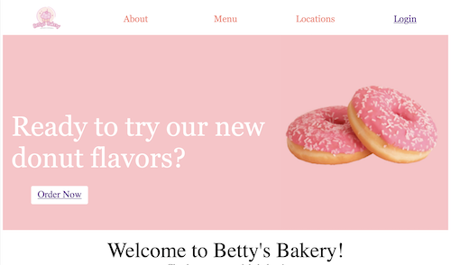
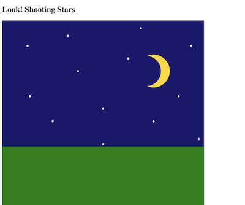
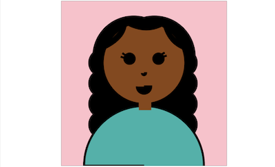
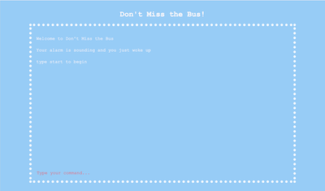

Client Project
Click to open
For this project, I used grids for the first time to make a website for my sister. She wanted a wesite she could use for a future bakery business. Throughout the making of it, I had to work with her for it to be exactly how she wanted. At times that made it a challenge but I had fun.

Animation Project
Click to open
This was my first animation project with javascript. Initially, I had trouble getting the stars to fly accross the screen like regular shooting stars. It took me quite some time (and help) to figure out to to get it to look how I wanted. When I finished I was proud of the outcome and was happy I learned something new.

Portrait Project
Click to open
This was my first time coding with javascript. I was getting used to using canvas and creating a picture using all shapes. I enjoyed doing this because it was almost like drawing but only with shapes. It was pretty challenging to figure out the cordinates for all the shapes at first.

Text Game Project
Click to open
This was the first game I coded. It is a text based adventure where the player's choices determine the outcome. I often felt myself getting a little overwhelmed with all the code but I was proud of how it came out. With more time, I would have added more details to make it more interesting.
Hi my name is Marta! I am currently a rising senior and I attend Wakefiled high school. I wanted to take web page because I really enjoyed design and I wanted to learn more about how web pages work. Throughout the year, I have learned so much more than that. I was able to dive deeper into where the internet comes from and how it works behind the scenes. I learned about the creation of webpages and how easy it is to make a simple website. I also learned about different ways to make your website your own through css and javascript. The projects I have showcased are the ones I am most proud of this year. They show a variety of skills I have learned and how far I have come. I am excited to take what I have learned in this class and use it beyond just the classroom.